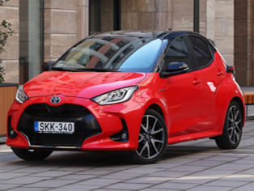
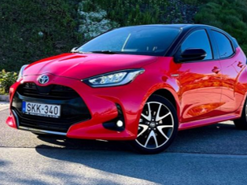
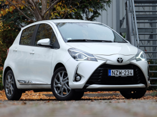

Toyota Yaris 1.5 Hybrid Premiere Győr-Moson-Sopron vármegye, Tóth Ádám 5.0 Sopron 2020 Hybrid 116LE 88 420 km Automata 3.900 Ft / óra
 Toyota Yaris 1.5 VVT-iE Borsod-Abaúj-Zemplén vármegye, Kiss Máté 4.0 Miskolc 2016 Benzin 111LE 173 905 km Manuális 2.250 Ft / óra
Toyota Yaris 1.5 Hybrid Pest vármegye, Szabó Lili 4.5 Szentendre 2019 Hybrid 116LE 121 640 km Automata 3.150 Ft / óra
 Toyota Yaris 1.5 Hybrid 130LE Csongrád-Csanád vármegye, Nagy Zsombor 3.0 Szeged 2022 Hybrid 130LE 42 018 km Automata 4.250 Ft / óra
Toyota Yaris 1.5 Dual VVT-i Baranya vármegye, Varga Dániel 4.0 Pécs 2015 Benzin 99LE 204 770 km Manuális 2.100 Ft / óra
Toyota Yaris 1.5 Hybrid 116LE Vas vármegye, Horváth Eszter 5.0 Szombathely 2021 Hybrid 116LE 67 903 km Automata 3.650 Ft / óra
Toyota Yaris 1.0 VVT-i Szabolcs-Szatmár-Bereg vármegye, Farkas Petra 3.0 Nyíregyháza 2012 Benzin 69LE 238 115 km Manuális 1.650 Ft / óra
 Toyota Yaris Cross 1.5 Hybrid Komárom-Esztergom vármegye, Molnár Balázs 4.5 Tatabánya 2023 Hybrid 116LE 19 480 km Automata 4.800 Ft / óra